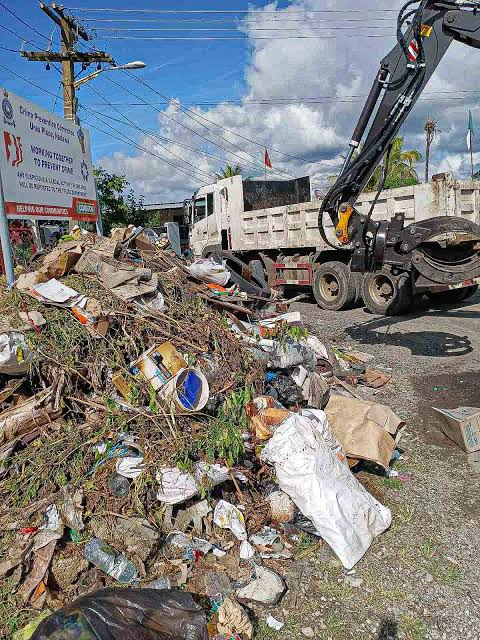

Understanding the Problem
Improper disposal of solid waste is an environmental challenge affecting many urban communities. In Kampala Central Division, waste may accumulate in public spaces, around business areas and near drainage channels when disposal and collection are not properly managed.
Poor waste disposal can contribute to blocked drainage, unpleasant surroundings, environmetal pollution and possible health risks to people living and working in affected areas.

Some contributing factors
Improper Disposal
Some people dispose of rubbish in places that are not designated for waste collection.
Collection Challenges
Delays or gaps in waste collection can contribute to waste accumulation.
Limited Awareness
Lack of information about waste separation and proper disposal can make the problem worse.
Who is this Website For?
This website is designed to provide useful waste managment information to different members of the Kampala Central Division community.
- Residents and tenants
- Landlords and Property Managers
- Market vendors and shop owners
- Community leaders
- Waste collection service providers
Our purpose
The purpose of this website is to promote awareness and responsible waste managment practices. It provides educational information, guidance on waste separation and a demonstration reporting form throuh which users can describe waste problems.
Report a Waste Problem